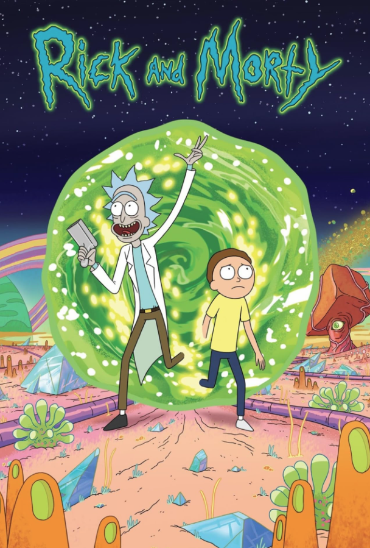
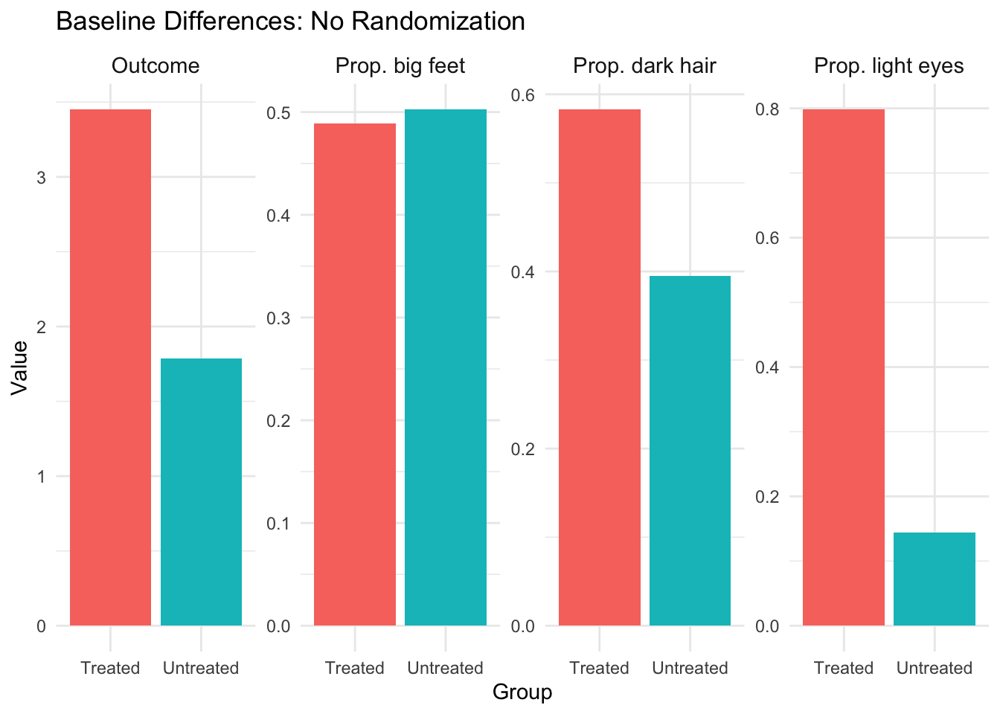
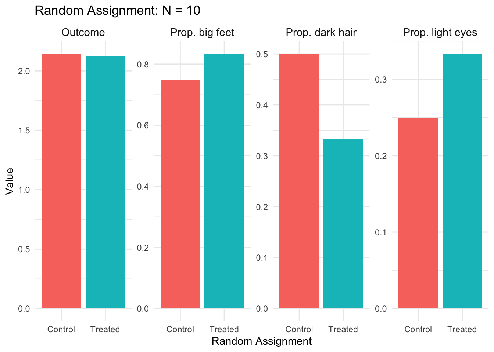
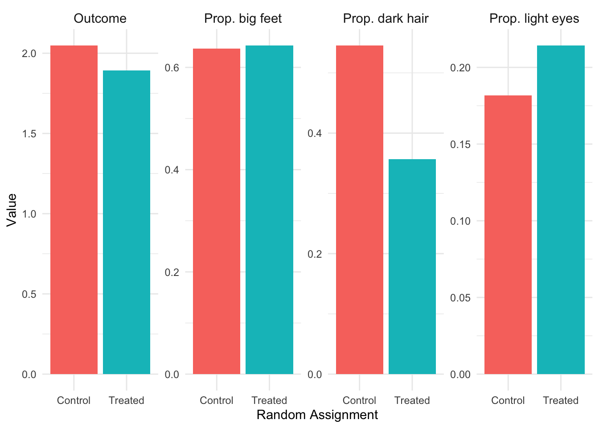
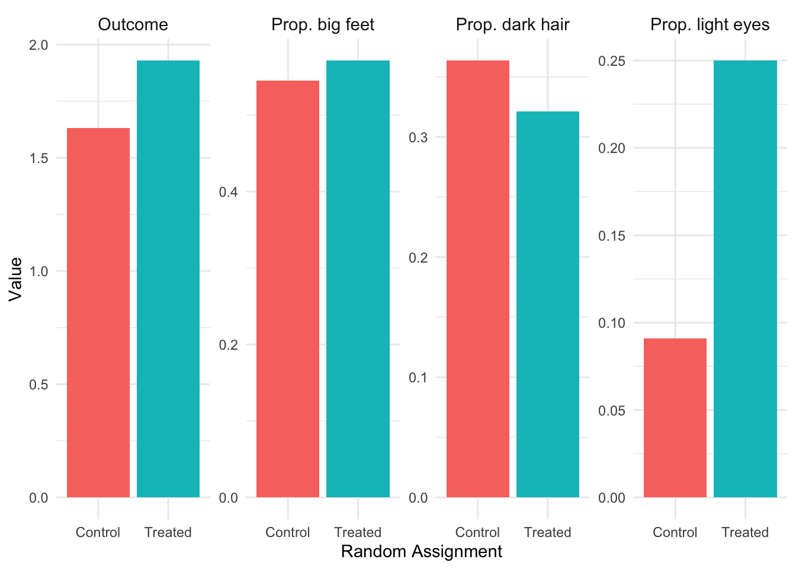
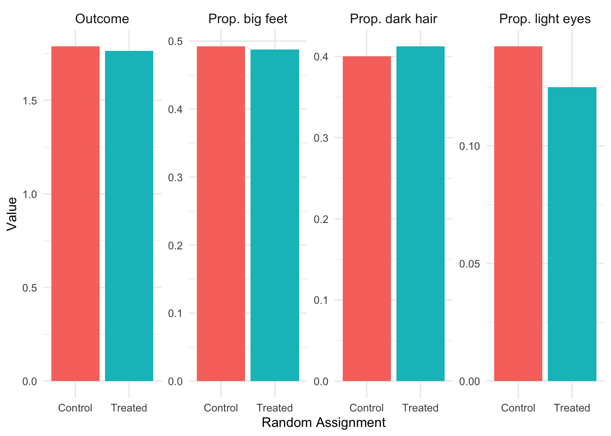

In Chapter 1, we discussed how econometrics focuses on identifying causal effects rather than mere correlations. We used the example of health insurance: while people with health insurance tend to be healthier than people without insurance, we cannot immediately conclude that health insurance causes better health. This chapter develops the conceptual and mathematical tools we need to think rigorously about causality, and introduces the randomized control trial (RCT) as the gold standard for causal inference.
2.1 The Problem with Simple Comparisons
Let’s return to our health insurance example. People with health insurance are, on average, healthier than people without it. This correlation is undeniable. But can we interpret this as evidence that insurance causes better health?
The problem is that people who have health insurance differ from those who don’t in many ways beyond just their insurance status. Those with insurance tend to be wealthier, more educated, and have more stable employment. All of these factors independently affect health outcomes. When we compare the health of insured and uninsured individuals, we’re not just comparing the effect of insurance—we’re comparing people who differ along many dimensions.
Selection Bias
Selection bias occurs when we compare groups that differ systematically in ways beyond just the treatment we’re studying. In other words, we are comparing apples to oranges.
The comparison we want to make is between two otherwise identical people who differ only in whether they have health insurance. In other words, we want an apples to apples comparison. This is the essence of the ceteris paribus condition: all else being equal, the difference between treated and untreated units reveals the causal effect of treatment.
2.2 The Multiverse of Possibilities
To build intuition for causal inference, consider the television show Rick and Morty. In this show, the character Rick possesses a “portal gun” that allows him to travel across infinite parallel universes. In each universe, there exists a version of his grandson Morty who is identical in every way except for one characteristic—Cowboy Morty, Evil Morty, Hammer Morty, and so on. Each Morty has the same home, same parents, same sister, same everything else.
Figure 2.1: Rick and Morty: A show about infinite parallel universes.

This multiverse provides the perfect setting for causal inference! Comparisons between different Mortys are truly ceteris paribus comparisons because everything except the one characteristic of interest is held constant.
2.2.1 The Causal Effect of College
Suppose we want to know the causal effect of attending college on wages. We can’t simply compare the wages of college graduates to non-graduates because these groups likely differ in many unobserved ways (motivation, family background, innate ability, etc.).
But imagine we could observe two versions of Morty from parallel universes: Morty C-137 (who didn’t attend college) and College Morty (who did). These two Mortys are identical in every way—same intelligence, same family, same opportunities—except that one went to college and the other didn’t.
Figure 2.2: Morty C-137 (left) and College Morty (right). The wage difference between them represents the true causal effect of college.
(a) Morty C-137
(b) College Morty
The difference in wages between College Morty and Morty C-137 would be a genuine ceteris paribus difference—the true causal effect of college on wages.
2.2.2 The Fundamental Problem
Of course, the fundamental problem of causal inference is that we don’t have a portal gun. We only observe one version of reality, not parallel universes. We can never observe what would have happened to a college graduate had they not gone to college, or what would have happened to a non-graduate had they attended. This unobserved “what if” scenario is called the counterfactual.
2.3 Randomized Control Trials: The Next Best Thing
Since we can’t travel between parallel universes, we need another way to make valid causal comparisons. The solution that comes closest to achieving ceteris paribus conditions in the real world is the randomized control trial (RCT).
Consider how a pharmaceutical company tests whether a new drug works. They don’t just give the drug to sick people and see if they get better—that would be subject to all sorts of selection bias. Instead, they conduct an RCT:
Sample a group of volunteers from the population of interest
Randomly assign some volunteers to receive the drug (the “treatment” group) and others to receive a placebo (the “control” group)
Compare the average outcomes between the treatment and control groups
The key insight is that random assignment eliminates selection bias. When treatment is assigned randomly, there is no systematic relationship between who receives treatment and their underlying characteristics. On average, the treatment group and control group will be identical in terms of age, health status, income, motivation, and every other characteristic—both observed and unobserved.
Why Randomization Works
Random assignment ensures that, on average, the treatment and control groups have identical characteristics. Any difference in outcomes between the groups can therefore be attributed to the treatment itself, not to pre-existing differences between the groups.
2.4 The Law of Large Numbers
Why exactly does randomization eliminate selection bias? The answer lies in a fundamental result from probability theory: the Law of Large Numbers (LLN).
The LLN states that as the sample size increases, the sample average converges to the population average. Formally, if \(Y_1, Y_2, ..., Y_n\) are independent, identically distributed random variables with mean \(\mu\), then:
\[
\text{plim}(\bar{Y}_n) = \mu
\]
where \(\bar{Y}_n\) is the sample average and \(\text{plim}\) denotes the probability limit (what the value converges to as \(n \to \infty\)).
2.4.1 Seeing the LLN in Action: Rolling Dice
To see the Law of Large Numbers at work, consider a simple example: rolling a fair six-sided die. The expected value (average outcome) of a single roll is:
\[
\mu = \frac{1 + 2 + 3 + 4 + 5 + 6}{6} = 3.5
\]
If we roll a die just once or twice, we might get values far from 3.5 (like a 1 or a 6). But what happens if we roll it many, many times? Let’s see what happens!
First, we will “pretend” rolling a dice by using the sample() function. This function will randomly select n numbers from a vector, here the numbers 1-6.
Let’s first roll the dice once. We will set the size argument in the sample() function to size = 1 to generate a single random number from our vector.
# Set seed for reproducibilityset.seed(1248)# Create a vector which represents the possible outcomes of a dice rolldice <-c(1, 2, 3, 4, 5, 6)# Now "roll" the dice using the sample() functionroll_1 <-sample(dice, size =1, replace =TRUE)# Print the result of the dice rollroll_1
[1] 2
With 1 dice roll, we get a value of 2. Obviously pretty far from the expected value \(\mu = 3.5\).
Now, let’s roll it 5 times and take the average of our 5 different rolls using the mean() function:
roll_5 <-sample(dice, size =5, replace =TRUE)# Print the 5 different dice rollsroll_5
[1] 1 5 2 5 1
# Find the mean of the 5 different dice rollsmean(roll_5)
[1] 2.8
With just 5 rolls, our average is a little closer to the expected value. Now, let’s try to roll it 25 times, 50 times, and 100 times and find the average values of our dice roll!
# Continue rolling to get 10 total rollsrolls_25 <-sample(dice, size =10, replace =TRUE)mean(rolls_25)
# And finally 100 rollsrolls_100 <-sample(1:6, size =100, replace =TRUE)mean(rolls_100)
[1] 3.35
Notice how the average tends to get closer to 3.5 as we increase the number of rolls. This isn’t guaranteed on any single attempt (randomness still plays a role), but the general tendency is clear.
Now let’s see what happens when we roll the die many times and track the running average at each step. In Figure 2.3, I plot the sample average of our dice rolls on the y-axis, and the number of times I roll the dice on the x-axis. The population mean, 3.5, is plotted with a dashed red line.
Code
# Set seed for reproducibilityset.seed(12345)# Number of dice rolls to simulaten_rolls <-1000# Simulate rolling a six-sided die n_rolls timesdice_rolls <-sample(1:6, size = n_rolls, replace =TRUE)# Calculate the running average after each rollrunning_avg <-cumsum(dice_rolls) /1:n_rolls# Create a data frame for plottingdice_data <-tibble(roll_number =1:n_rolls,running_average = running_avg)# Plot the running averageggplot(dice_data, aes(x = roll_number, y = running_average)) +geom_line(color ="steelblue", linewidth =0.8) +geom_hline(yintercept =3.5, linetype ="dashed", color ="red", linewidth =1) +annotate("text", x =750, y =3.7, label ="Expected value = 3.5", color ="red", size =4) +labs(x ="Number of Rolls",y ="Running Average",title ="Convergence to Expected Value" ) +theme_minimal() +coord_cartesian(ylim =c(2.5, 4.5))
Figure 2.3: The Law of Large Numbers in action. As we roll a die more times, the average of all rolls converges to the expected value of 3.5.
Early volatility: In the first few rolls, the running average bounces around wildly. After just 10 rolls, we might be at 4.2 or 2.9.
Gradual stabilization: As we accumulate more rolls (say, 100 or 200), the average starts to settle down closer to 3.5.
Long-run convergence: By the time we’ve rolled 1,000 times, the average is very close to the theoretical expected value of 3.5.
This is the Law of Large Numbers in action: with enough observations, sample averages converge to population averages. The key word is “enough”—we need a sufficiently large sample for the convergence to occur.
2.4.2 How the LLN Enables Causal Inference
When we randomly assign individuals to treatment and control groups, we are essentially drawing random samples from the same underlying population. The LLN guarantees that, with a large enough sample, the average characteristics of each group will converge to the population average—and therefore, to each other.
This is why randomization eliminates selection bias: the treatment and control groups become statistically identical in all characteristics—both observed and unobserved—as the sample size grows.
2.5 How Randomization Eliminates Selection Bias: A Simulation
What is a Simulation?
A simulation is a computer-based experiment where we generate artificial data according to rules we specify. Unlike real-world data, we know exactly how the simulated data was created—including the true causal effects, which variables influence which outcomes, and how treatment was assigned.
Simulations are powerful learning tools because they let us see what should happen under ideal conditions. If we set the true causal effect to zero and then compare treated and untreated groups, any difference we observe must be due to something other than a real treatment effect (like selection bias or random chance). By manipulating features of the simulation—such as sample size or how treatment is assigned—we can build intuition for how these factors affect our ability to recover causal effects. Think of simulations as a laboratory where we can run controlled experiments on statistical methods themselves.
Let’s look at a more complex version of how the LLN works in the context of a randomized control trial. Consider a simulation where we have a population with three observable characteristics: light-colored eyes, dark hair, and being tall. Suppose these characteristics are correlated with both treatment status and outcomes in the observational data (i.e., without random assignment). Specifically, having light-colored eyes will be strongly positively correlated with the treatment and the outcome; having dark hair will be moderately positively correlated with the treatment and the outcome, and being tall will be slightly negatively correlated with the treatment and the outcome. Critically, we set the true causal effect of treatment on the outcome to zero.
A Note on the Code Below
The R code in the following sections is more advanced than what we’ve covered so far in the course. Don’t worry if you don’t understand every line! The code is provided for those who are curious and want to see how simulations work “under the hood.” Even if the syntax is unfamiliar, reading through the comments can help you understand the logic of what we’re doing. As you progress through the course, more of this code will start to make sense.
Code
# Load the tidyverse package for data manipulation and plottinglibrary(tidyverse)# Set a "seed" for reproducibility# This ensures we get the same random numbers each time we run the codeset.seed(181247)# Define the TRUE causal effect of treatment# We're setting this to ZERO so we know any observed difference is bias!causal_effect <-0# Create a population of 10,000 individualsn_population <-10000# Generate three random characteristics for each person# Each characteristic is randomly 0 or 1 (like a coin flip)eye_light <-sample(x =c(1, 0), size = n_population, replace =TRUE)hair_dark <-sample(x =c(1, 0), size = n_population, replace =TRUE)big_feet <-sample(x =c(1, 0), size = n_population, replace =TRUE)# Generate random "noise" - unexplained variation in outcomeserr <-rnorm(n_population)# Create an underlying "propensity" for treatment# Notice: people with light eyes are MUCH more likely to be treated (coefficient = 2.1)# People with dark hair are moderately more likely (coefficient = 0.83)# Big feet has a small negative effect (coefficient = -0.11)treatment_propensity <-1+2.1* eye_light +0.83* hair_dark -0.11* big_feet + err# Assign treatment based on this propensity (treated if propensity > 2.25)# This creates SELECTION BIAS: treatment is correlated with characteristicstreated <-ifelse(treatment_propensity >2.25, 1, 0)# Create the outcome variable# The outcome depends on the same characteristics that predict treatment!# But notice: we add "treated * causal_effect" which equals zero# So treatment has NO real effect on the outcomeoutcome <-1+2.2* eye_light +1.2* hair_dark -0.01* big_feet + treated * causal_effect# Combine everything into a data framedat <-tibble(outcome = outcome,treated = treated,eye_light = eye_light,hair_dark = hair_dark,big_feet = big_feet)
Code
# Calculate the mean of each variable for treated vs untreated groupsbaseline_diffs <- dat |># Group the data by treatment statusgroup_by(treated) |># Calculate summary statistics for each groupsummarise(Outcome =mean(outcome),`Prop. light eyes`=mean(eye_light),`Prop. dark hair`=mean(hair_dark),`Prop. big feet`=mean(big_feet) ) |># Reshape data from "wide" to "long" format for plottingpivot_longer(cols = Outcome:`Prop. big feet`,names_to ="variable",values_to ="value" ) |># Create nice labels for the treatment groupsmutate(group =ifelse(treated ==1, "Treated", "Untreated"))# Create the bar plotggplot(baseline_diffs) +geom_bar(aes(x = group, y = value, fill = group),stat ="identity" ) +# Create separate panels for each variablefacet_wrap(~variable, nrow =1, scales ="free_y") +labs(x ="Group",y ="Value",title ="Baseline Differences: No Randomization" ) +theme_minimal() +theme(legend.position ="none",strip.text =element_text(size =11) )
Figure 2.4: Baseline differences between treated and untreated groups without randomization. Despite the true causal effect being zero, we observe large differences in both characteristics and outcomes.

Notice in Figure 2.4 how the treated and untreated groups look very different! The treated group has a higher proportion of people with light eyes and dark hair. Most importantly, the treated group has a higher mean outcome—even though we know the true causal effect is zero. This is selection bias in action: people who “select into” treatment have characteristics that also lead to better outcomes.
Code
# Function to run the random assignment simulation for a given sample sizerun_random_assignment <-function(data, sample_size, seed =181247) {# Set seed for reproducibilityset.seed(seed)# Take a random sample from the untreated population# (We use untreated only to avoid any prior treatment effects) sample_data <- data |>filter(treated ==0) |>slice_sample(n = sample_size)# RANDOMLY assign treatment - this is the key step!# Each person has a 50% chance of being assigned to treatment# This assignment is INDEPENDENT of their characteristics random_treatment <-sample(c(1, 0), size = sample_size, replace =TRUE)# Add the random treatment assignment to our sample sample_data <- sample_data |>mutate(rand_treat = random_treatment)# Calculate means for each randomly assigned group sample_data |>group_by(rand_treat) |>summarise(Outcome =mean(outcome),`Prop. light eyes`=mean(eye_light),`Prop. dark hair`=mean(hair_dark),`Prop. big feet`=mean(big_feet),.groups ="drop" ) |>mutate(sample_size = sample_size)}# Run the simulation for different sample sizesresults_n10 <-run_random_assignment(dat, sample_size =10)results_n25 <-run_random_assignment(dat, sample_size =25)results_n50 <-run_random_assignment(dat, sample_size =50)results_n100 <-run_random_assignment(dat, sample_size =100)results_n500 <-run_random_assignment(dat, sample_size =500)# Combine all resultsall_results <-bind_rows(results_n10, results_n25, results_n50, results_n100, results_n500)# Reshape for plottingall_results_long <- all_results |>pivot_longer(cols = Outcome:`Prop. big feet`,names_to ="variable",values_to ="value" ) |>mutate(group =ifelse(rand_treat ==1, "Treated", "Control"),sample_size_label =paste("N =", sample_size) )
Now let’s see what happens when we randomly assign treatment. Starting with a small sample (N=10), we see in Figure 2.5 that random assignment reduces but doesn’t eliminate the differences between groups. With such a small sample, random chance can still produce imbalanced groups. With only 10 people, we still see noticeable differences between the randomly assigned treatment and control groups.
Figure 2.5: Random assignment with N=10. Some imbalance remains due to small sample size.

As we increase the sample size to N=25 and N=50, as shown in Figure 2.6 and Figure 2.7, the differences between treatment and control groups shrink. The LLN is at work: larger samples produce more balanced groups in terms of their background characteristics.
Figure 2.6: Random assignment with N=25.

Figure 2.7: Random assignment with N=50.

Figure 2.8: Random assignment with N=500. The treatment and control groups are now nearly identical in their characteristics, and the difference in outcomes is close to the true causal effect of zero.

By N=500, as show in Figure 2.8, the treatment and control groups are nearly identical across all characteristics. The difference in outcomes between groups is now close to zero—the true causal effect! Any remaining difference is just random variation, not systematic selection bias.
2.6 The Potential Outcomes Framework
Now that we intuitively understand why simple comparisons can be misleading and how randomization addresses this problem, let’s formalize these concepts mathematically using the Potential Outcomes Framework.
2.6.1 Defining Potential Outcomes
Consider our example of estimating the causal effect of college on wages. For any individual \(i\), we can define two potential outcomes:
\(Y_{1i}\): The wage individual \(i\) would earn if they attend college
\(Y_{0i}\): The wage individual \(i\) would earn if they do not attend college
The causal effect of college for individual \(i\) is simply the difference between these potential outcomes:
\[
\kappa_i = Y_{1i} - Y_{0i}
\]
This framework captures the “multiverse” intuition: \(Y_{1i}\) is College Morty’s wage, \(Y_{0i}\) is Morty C-137’s wage, and \(\kappa_i\) is the causal effect of college for Morty.
2.6.2 The Fundamental Problem of Causal Inference
The fundamental problem is that we only observe one potential outcome for each individual. If person \(i\) attends college, we observe \(Y_{1i}\) but never see \(Y_{0i}\). If they don’t attend, we observe \(Y_{0i}\) but never see \(Y_{1i}\). We never observe both potential outcomes for the same individual.
That is, we observe the treated outcome for treated individuals and the untreated outcome for untreated individuals—but never both.
2.6.3 Selection Bias Formalized
Now we can formally see why simple comparisons are problematic. Suppose we compare average outcomes between those who are treated (\(D_i = 1\)) and those who are untreated (\(D_i = 0\)). The difference in group means is:
\[
E[Y_i | D_i = 1] - E[Y_i | D_i = 0]
\]
Since we only observe \(Y_{1i}\) for the treated and \(Y_{0i}\) for the untreated, this becomes:
\[
E[Y_{1i} | D_i = 1] - E[Y_{0i} | D_i = 0]
\]
Here’s the key insight. Let’s add and subtract a term that represents the counterfactual—what the treated group’s outcome would have been without treatment:
The selection bias term compares the untreated potential outcomes of the treated group to the untreated potential outcomes of the control group. In the health insurance example, this captures differences in baseline health (absent insurance) between those who choose to get insurance and those who don’t. If people who get insurance would be healthier even without insurance (perhaps because they’re wealthier or more health-conscious), then selection bias is positive, and the simple comparison overstates the causal effect.
2.6.4 How Randomization Eliminates Selection Bias
When treatment is randomly assigned, the treatment and control groups are drawn from the same population. By the Law of Large Numbers, their average characteristics—including their average potential outcomes—converge to each other. Formally:
\[
E[Y_{0i} | D_i = 1] = E[Y_{0i} | D_i = 0]
\]
This says that the average untreated potential outcome is the same for both groups. Plugging this into our decomposition:
With random assignment, the simple difference in means equals the causal effect. Selection bias disappears.
2.7 The Oregon Health Insurance Experiment
Most econometric research cannot rely on randomization to identify causal effects. We typically work with observational data where treatment is not randomly assigned, and much of this course focuses on methods for addressing selection bias in such settings. However, there have been a few landmark studies that used randomization to study important policy questions. One of the most influential is the Oregon Health Insurance Experiment.
2.7.1 Context: Medicaid Expansion
Throughout the 2000s, many U.S. states expanded their Medicaid programs to cover more low-income residents. Most states simply extended coverage to everyone who became newly eligible. But in 2008, Oregon did something unique: facing limited resources, they offered Medicaid coverage through a public lottery.
2.7.2 The Lottery
Oregon’s approach created a natural randomized experiment. People who wanted coverage could sign up for the lottery. Winners received the opportunity to apply for the Oregon Health Plan (the state’s Medicaid program), while losers remained uninsured. To be eligible, applicants had to be legal Oregon residents aged 19-64, uninsured for the past six months, with income below the federal poverty line, and not otherwise eligible for health insurance.
Because lottery winners were chosen randomly, the comparison between winners and losers provides a valid causal estimate of the effect of health insurance—free from the selection bias that plagues observational studies.
2.7.3 Results
Researchers followed lottery participants and found that lottery winners (relative to losers) experienced:
Increased take-up of Medicaid: The lottery actually changed insurance status, confirming the treatment “worked”
Increased use of medical resources: Winners used more hospital and outpatient services
Small improvements in overall health: Physical health improvements were modest, though mental health and financial security improved substantially
These findings are important because they come from a rigorous RCT rather than observational comparisons. The study provides some of the cleanest evidence we have on what health insurance actually causes, as opposed to what it merely correlates with.
Discussion Question
The Oregon experiment found modest effects of insurance on physical health. Does this mean expanding health insurance is not worthwhile? What other outcomes might matter for policy decisions?
2.8 Summary and Conclusion
This chapter introduced the fundamental concepts underlying causal inference in econometrics. We began with the intuition that simple comparisons between treated and untreated groups can be misleading due to selection bias—the groups may differ in ways beyond just the treatment. The “multiverse” thought experiment illustrated what we really want: ceteris paribus comparisons where everything except the treatment is held constant.
Randomized control trials approximate this ideal by randomly assigning treatment, which ensures that treatment and control groups are comparable on average. The Law of Large Numbers guarantees that with large enough samples, random assignment eliminates selection bias.
We then formalized these ideas using the potential outcomes framework, which defines causal effects as the difference between what would happen with and without treatment. The fundamental problem is that we only observe one potential outcome per individual. Simple comparisons of means capture both the causal effect and selection bias, but random assignment makes selection bias vanish.
2.8.1 Key Takeaways
Selection bias arises when treated and untreated groups differ systematically beyond just the treatment—we’re comparing apples to oranges
Ceteris paribus (“all else equal”) comparisons isolate the causal effect by holding everything constant except the treatment
Randomized control trials eliminate selection bias by ensuring treatment and control groups are drawn from the same population
The Law of Large Numbers guarantees that with large samples, randomly assigned groups have identical average characteristics
The potential outcomes framework formalizes causal effects as \(\kappa = Y_{1i} - Y_{0i}\), but we only observe one potential outcome per individual
Simple differences in means equal: \(\text{Causal effect} + \text{Selection bias}\). Randomization sets selection bias to zero.
2.9 Check Your Understanding
For each question below, select the best answer from the dropdown menu. The dropdown will turn green if correct and red if incorrect. Click the “Show Explanation” toggle to see a full explanation of the answer after attempting each question.
Show Explanation
Students who seek out tutoring are likely more motivated, more concerned about their grades, or struggling in ways that prompt intervention. These characteristics affect test scores independently of tutoring. This is selection bias: tutored and non-tutored students are not comparable.
“Ceteris paribus” is Latin for “all else being equal.” In causal inference, it refers to the ideal comparison where two groups (or two versions of the same individual) differ only in the treatment, with all other characteristics held constant.
Random assignment means each individual has the same probability of being in treatment or control, regardless of their characteristics. By the Law of Large Numbers, this ensures both groups have the same average characteristics, eliminating systematic differences (selection bias).
\(Y_{0i}\) denotes the potential outcome for individual \(i\) under the control condition (no treatment). \(Y_{1i}\) would be the potential outcome under treatment. The causal effect is \(Y_{1i} - Y_{0i}\).
The fundamental problem is that for any individual, we observe either their treated outcome or their untreated outcome, but never both. We cannot directly observe the counterfactual—what would have happened under the alternative treatment status.
This inequality says the untreated potential outcome is higher for the treated group than for the control group. In other words, the treated group would have better outcomes even without treatment. This means selection bias is positive: when we compare groups, part of the difference reflects this pre-existing advantage, not the causal effect. Simple comparisons overstate how much the treatment actually helps.
Angrist, Joshua D., and Jörn-Steffen Pischke. 2014. Mastering ’Metrics: The Path from Cause to Effect. Princeton University Press.